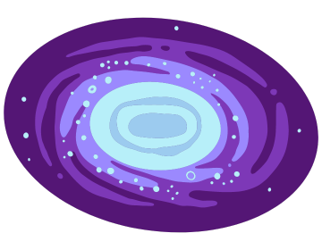
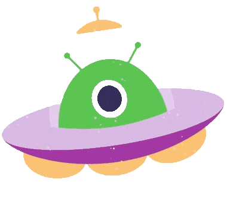
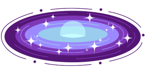

LAS GALAXIAS
-
¿QUE ES UNA GALAXIA?
Las galaxias son acumulaciones de gas, polvo y miles de millones de estrellas y sus sistemas solares, agrupados gracias a la gravedad. Las mas pequeñas abarcan alrededor de 3.000 millones de estrellas, y las galaxias de mayor tamaño pueden llegar a abarcar UN BILLON de astros. Se estima que existen unas 100 000 millones de galaxias en el Universo, que se encuentran principalmente en cúmulos o grupos (clusters). La galaxia más conocida es la Vía Láctea, nuestra galaxia – que de hecho el término galaxia procede de la palabra griega ‘gala’ que literalmente significa ‘leche’.
- 
-
TIPOS DE GALAXIAS
 Las galaxias se clasifican de acuerdo a su forma en luz visible. La clasificación más utilizada a día de hoy es la Secuencia de Hubble, también conocida como Diagrama diapasón de Hubble. En este esquema, las galaxias se clasifican en categorías: elípticas, espirales o irregulares.
| ELIPTICAS | ESPIRALES | IRREGULARES |
|---|---|---|
|  | ||
Son galaxias muy grandes y brillantes, que parecen tener menos estrellas que el resto de las galaxias, pero las estrellas que tienen son muy viejas. A estas galaxias las podemos reconocer porque tienen forma ovalada. |
Suelen ser muy grandes y a simple vista se distinguen 2 estructuras que las forman, una de ellas es el centro o bulbo. Este es brillante, con estrellas viejas, gas caliente y a veces hasta un gran agujero negro. La otra estructura es el disco, formado por brazos en forma de espiral donde se encuentran estrellas jóvenes con planetas, gas y polvo. |
Una galaxia irregular es un conglomerado de estrellas, planetas, gas, polvo y materia que, si bien está unido por la fuerza de gravedad, carece visualmente de organización. A diferencia de otras galaxias que poseen un núcleo, un disco y brazos en espiral bien definidos, estas no tienen simetría ni alguna de estas estructuras. |
CARACTERISTICAS DE LAS GALAXIAS
Color
Las estrellas jóvenes y recién creadas desprenden colores azulados en su órbita gracias a su gran temperatura. El color amarillo o anaranjado en las galaxias representan a estrellas adultas, aunque que están a muchos millones de años de morir. Por otro lado, el color rojo en el universo puede tener varios significados, el más directo sobre las estrellas gigantes rojas. Cuando se encuentra una galaxia con tonos rojizos de forma abundante, esto significa que la galaxia no ha producido nuevas estrellas en muchos millones de años, y que por lo tanto las que quedan son las viejas.
Tamaño
La mayor parte de las galaxias son pequeñas y muy tenues, y se conocen como galaxias enanas; suelen ser elípticas o de formas irregulares. Solamente las galaxias más grandes y luminosas pueden verse a distancias tan lejanas; estas galaxias son siempre galaxias gigantes y son elípticas. Las espirales suelen tener tamaños intermedios: son más grandes que las espirales y las irregulares, pero más pequeñas que las espirales gigantes.
Interacción de unas a otras
Las distancias entre las galaxias son muy grandes, pero no tan grandes comparadas con su tamaño: tan solo unas pocas veces mayor. Debido a esto, las colisiones entre galaxias ocurren a menudo. La forma de las galaxias cambia notablemente después de estas colisiones, como se muestra en la Figura 7. Las dos galaxias pueden juntarse e incluso formar una galaxia más grande. Las galaxias elípticas gigantes se encuentran normalmente en el centro de los cúmulos galácticos, que son zonas de gran actividad y colisiones.